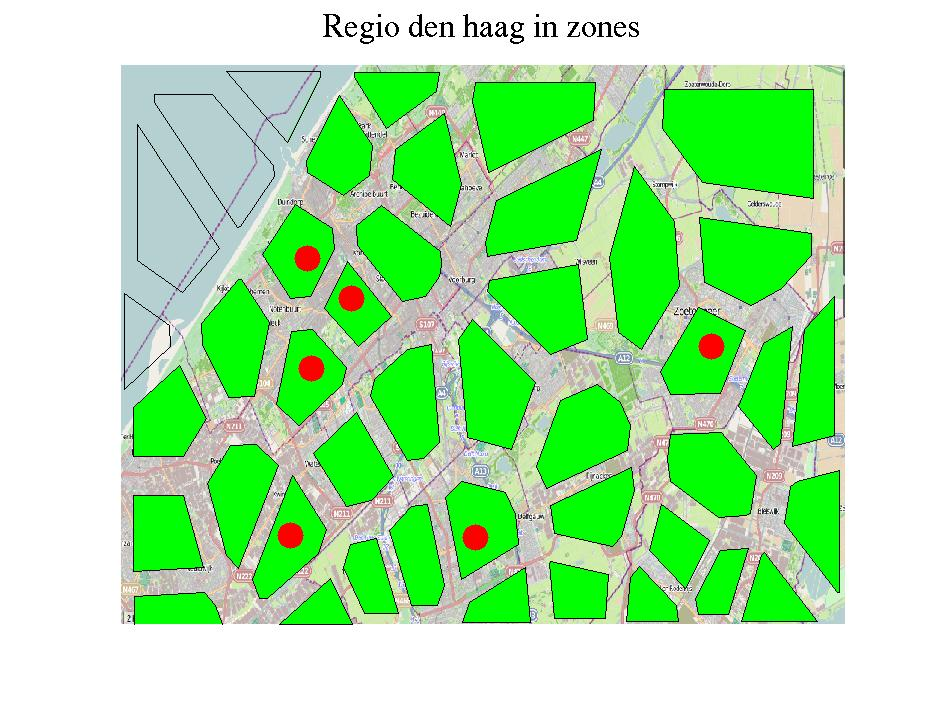

Network Transmission Model
Het model werkt met zones van een paar kilometer bij een paar
kilometer. Voor de regio Den Haag zou het model er zo uit kunnen zien
The model works with zones of a few km x a few km. For the
region of the Dutch governmental city The Hague the model could look
like this (total area: approx 30x40 km):

Een simulatie ziet er als volgt uit. Voor de verkeersregeling
zijn drie verises gekozen:
- Iedereen rijdt de normale route en waar mogelijk rijdt men
door
- Iedereen rijdt de normale route maar de wegbeheerder (van Den
Haag) kiest voor beperkte instroom in de stad. Daardoor moeten mensen
aan de rand langer wachten, maar is uiteindelijk iedereen beter af
omdat de doorstroming in de stad veel beter is
- Iedereen rijdt de beste route naar de stad en de wegbeheerder
(van Den Haag) kiest voor beperkte instroom in de stad.
A simulation run is shown below. There are three
different scenarios, with different traffic control:
- All traffic takes the normal routes and if possible one
advances
- All traffic takes the normal routes, but the local Tha
Hague road authority limits the inflow into the town. As a
consquence, people have to wait before entering, but all in all,
there is less delay because delays in town are much lower
- All traffic takse the best route, and the The Hague road
authority limits the inflow into the town.

|
 |
 |
Geen regeling/no control |
Tegenhouden aan randen/Limit inflow |
Tegenhouden en routeren/limit inflow and route |
Meer informatie/More information:
- Knoop, V. L. and Hoogendoorn, S. P., (2013) Verkeersvoorspellingen met modellen:
een voorspelling over modellen . Nationaal Verkeerskunde Congres), 6
November 2013 (pptx here,
elevator pitch here)
- Knoop, V.L. and Hoogendoorn, S.P. (2014), Network Transmission
Model: a dynamic traffic model at network level, in: Proceedings of
the 93rd Annual Meeting of the Transportation Reseach Board, January
12-16, 2014 Washington D.C.